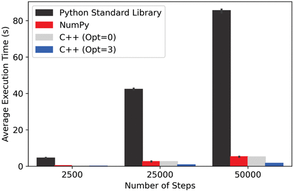

Final Project Assignment#
Systematic Evaluation of Code Performance#
In this class, you have written three version of your Monte Carlo code. For this project, systematically evaluate the performance of the three Monte Carlo code versions you have. Consider investigating the code speed by either:
Increasing the number of steps with a constant number of particles or
Increasing the number of particles while maintaining a consistent number of steps.
This will involve running 3 versions of code for 3 conditions each, with each data point being an average of 3 trials (27 simulation runs!).
After obtaining your timing data, make a plot or multiple plots showcasing your average timing results. Address the following questions in your assessment:
Which version is the fastest?
Do the different versions scale in distinct ways?
Can you identify potential reasons for observed performance variations?
Is there a particular version you preferred to write
As you assess, ensure that all code versions consistently produce similar energy values.
As an example, Dr. Pritchard and Dr. Nash completed this assignment and made the following figure of results using matplotlib:
Do you see similar relative performance/trends?
Timing Your Code#
You will want to use the same method to time trials of your code.
You should use the time command line utility.
You will need to save your Python versions as .py files.
To time something on the command line, do
time python run_sim.py
For other commands, you should replace the command. For example, to time an executable, you would do time ./executable_name.
Turning in Your Code#
Each group should have the following on their group repository:
The Python Standard Library Version of the MC simulation.
The NumPy Version of the MC simulation.
The C++ version of the MC simulation.
A README.md file with an explanation of your repository.
Final Presentation#
The final presentation should be 15-20 minutes in length. The three aspects of this course were software engineering, molecular simulation, and programming. You should address all three in your final presentation along with results from your final project.
You can use the following questions to guide your group presentation (but you should not just answer these point by point, use them as a guideline).
Molecular Simulations#
What are Monte Carlo methods?
Why can we use MC methods to describe molecular systems?
What potential function did we use to describe our system? What were its characteristics? What does the Lennard Jones potential describe in general?
Programming#
What is the difference between an interpreted and compiled language? Which is Python? Which is C++?
What are the advantages and disadvantages of each language?
We had three implementations of our code - a version using the python standard library, a version using NumPy, and a version written in C++. Which was your preferred implementation and why? Which seems like the best for users, and under what conditions? Was one easier for you to develop than the others?
Software Engineering#
What is version control? What software did we use for version control? What are the advantages of using version control?
What work flow/method did you use to work on a project with your teammates?
What is your impression of working with git/GitHub? Did it make it easier or harder to collaborate for you?
During the bootcamp, we discussed the idea of software testing. How did we test our code? What is important when writing unit tests? Do you see the benefit of having a testing suite with software?
In addition to changing programming language in order to make the code more performant, we were careful in the way we constructed calculations in our MC loop. What were the choice(s) we made to increase performance?